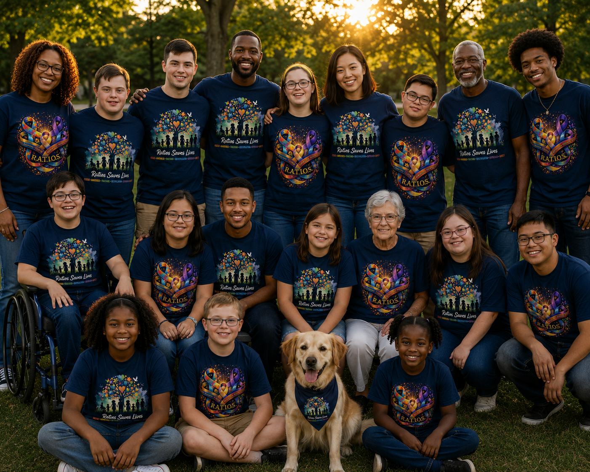

Our Story
Every meaningful organization begins with a moment that changes how people see the world.
RATIOS was born from one of those moments.
After a vulnerable adult with communication challenges was found alone in the community, it became clear how quickly an ordinary day can become an emergency when someone cannot easily communicate who they are, where they belong, or how to reach the people who love them.
That experience inspired a simple but powerful question: How can communities be better prepared before an emergency happens?
Today, RATIOS works alongside families, caregivers, schools, healthcare providers, first responders, and community partners to improve preparedness, strengthen community awareness, and promote practical safety solutions that preserve dignity and independence.
Because every individual deserves to be recognized, understood, and protected.
Founded by Desirae Grissom
Founder & Executive Director
